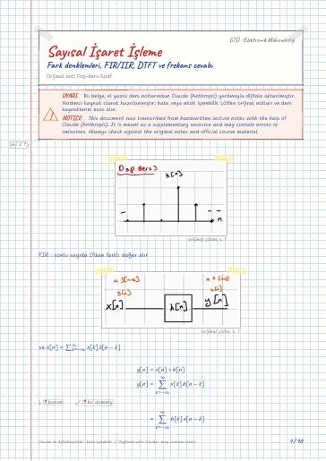

Fundamentals of Digital Signal Processing · Digital lecture note
Lecture 3 – Difference equations, FIR/IIR, DTFT and frequency response
Sayısal İşaret İşlemenin Temelleri – Fark denklemleri, FIR/IIR, DTFT ve frekans cevabı
- Course
- Fundamentals of Digital Signal Processing (ELM367)
- Semester
- Semester 6 · Spring 2023–24
- Format
- PDF · 10 pages · 0.3 MB · handwriting-style LaTeX
- Language
- Turkish
- Original note
- Dsp-ders-3.pdf
Open the PDF (0.3 MB)LaTeX source (.tex)Original handwritten note

What is in this note?
Section headings of the note (in Turkish):
- Örnek
- DTFT
- Properties of DTFT
- The convolution Theorem
Text of the note
Show as plain text (Turkish; formulas and drawings are not included)
FIR : sonlu sayıda 0'dan farklı değer alır
ve olsa bir yerden sonra toplamı kesebiliriz
Filtre IIR ise konvülasyon sadece kağıt üzerinde gerçekleşebilir
yani toplam formülü kullanılamaz.
Constant coefficient Difference Equation
Sabit katsayılı fark denklemi
Bu nereden geliyor??
Bir sistem düşünelimOrijinalde turuncu kalemle üstü çizilen terimler turuncu vurguyla gösterilmiştir.
ω 'nın fonksiyonu sürekli
X(e^jω) ω 'nın 2π 'sinde periyodik
(ses işareti 3,2 | 4 kHz'e sınırlanıyor
8 kHz örnekleme frekansı)
Fourier için yeter koşuldur
bu şartı sağlamayan
FIR sistemlerin her zaman fourieri
IIR sistemlerde sadece kararlıysa var
Properties of DTFT
yüksek geçiren çünkü en yüksek frekans π
Fazlar orjine göre simetriktir
Reel bir işaretin fourier dönüşümü ω 'ya simetriktir
yüksek frekanslar güçlenir
x[n] işaretinin enerjisi Enerji yoğunluğu
The convolution Theorem
eigen value (öz değer) eigen vector (öz vektör)
dizi katsayı (örnek 0,4 e^jθ )
Lineer bir sistem giriş işaretin frekansı korunur.
Girişin frekansına göre sistem farklı davranır bu yüzden H(e^jω) 'ya frekans cevabı denir.
← All Fundamentals of Digital Signal Processing digital notes